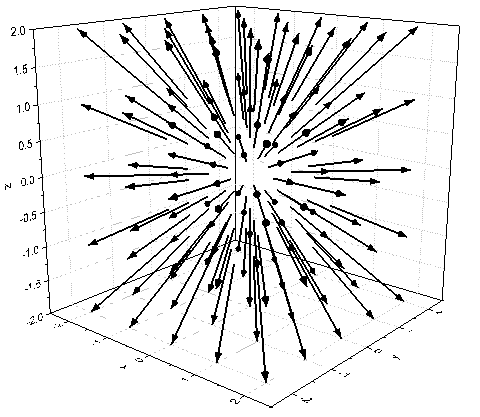
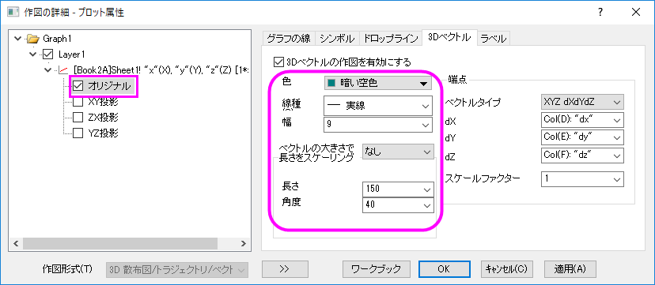
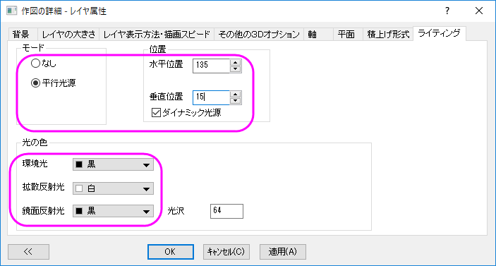
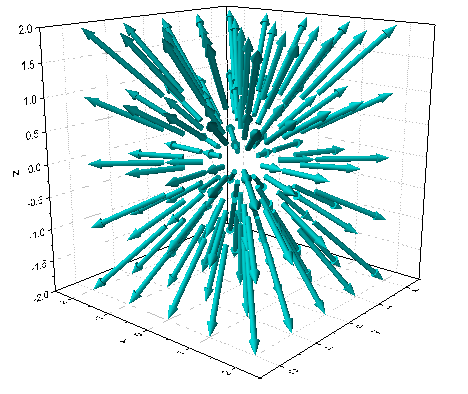

3Dベクトルグラフ
3Dベクトルグラフ
サマリー
OriginはXYZ XYZ および XYZ dXdYdZの2種類のデータ構成から3Dベクトル図を作図できます。
XYZ XYZ はベクトルの始点と終点を定義します。XYZ dXdYdZはベクトルの始点データと始点と終点のXYZ平面上への射影の長さです。
学習する項目
- XYZ dXdYdZワークシートデータから3Dベクトル図を作成する
- Customize the 3D Vector
ステップ
このチュートリアルは、チュートリアルデータプロジェクト（<Origin EXE フォルダ>\Samples\TutorialData.opj）と関連しています。
また、「ラーニングセンター」からこのグラフを呼び出すことができます。(ヘルプ: Learning Center メニューを選択、または
キーボードのF11 キーを押して、グラフサンプルから、グラフサンプル：3D Symbol Bar and Wallを選択します)
- TutorialData.opj を開き、プロジェクトエクスプローラでProject Exprorer
(PE) フォルダを開きます。
- ワークブックBook2を開きます。ワークシートの左上角を右クリックして全てのデータを選択します。
- メニューから、作図：3D：3DベクトルXYZ dXdYdZを選択します。以上により、ビルトインのテンプレートから3Dベクトルプロットを作成します。
- 
- ベクトル図をダブルクリックして、作図の詳細ダイアログを開きます。ダイアログの左側にあるパネルでオリジナル
ベクトルプロットが選択されていることを確認します。3D ベクトルタブを選択します。
- 作図の詳細 ダイアログボックスの 3Dベクトル タブで、次のグラフのように示したようなパラメータに設定します。色ボタンをクリックし、メニュー内から暗い空色を選択します。
- 
- OKボタンをクリックしてこれらの設定を適用し、ダイアログを閉じます。
- メインメニューでフォーマット：レイヤと操作して作図の詳細ダイアログを開き、ライティングタブで下図のように設定します。
- 
- グラフを回転させて、見やすくなる角度に変更します。最終的なグラフはこのようになります。
- 